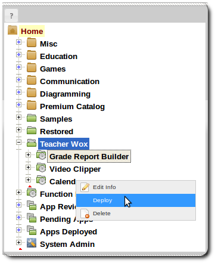
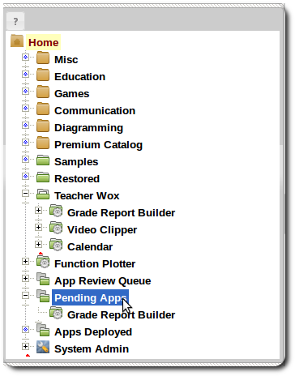
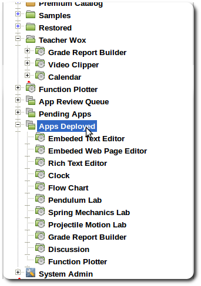
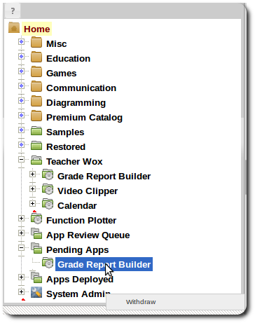
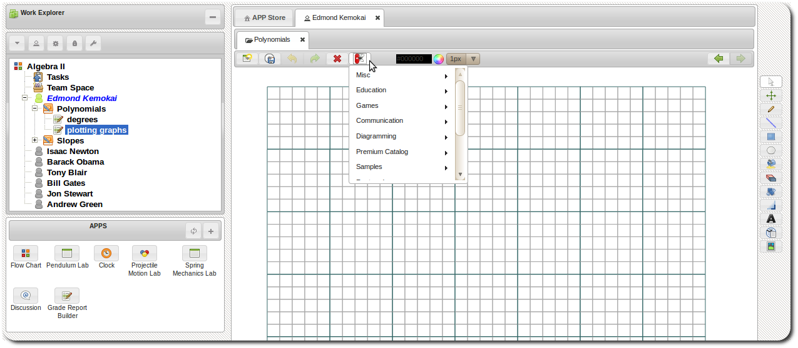

APP Deployment
Deploying APPs
Submit APPs
When APP development it needs to be deployed.
-
Right click APP item and select deploy.
 - When APP is deployed, depending on system settings it will either go to a review queue or directly to production for end-user use.
-
If APPs require review, your submitted APP would be listed under the Pending Apps.
 -
If the APP is in production either after review approval or if review is not required,
the APP would be listed under Apps Deployed

Withdraw APPs
For APPs awaiting review, a developer may choose to withdraw the APP before it is approved for production use.
-
Right click the APP under Pending Apps and select withdraw.

Review APPs
If the system requires APP approval before submission to production, APPs submitted by developers would be
queued until approved. Queued APPs would be listed under App Review Queue.

At the moment, a reviewer would need to login as the developer in order to get access to APPs for testing
and review.
-
Right click a APP item and select Approve or Reject.